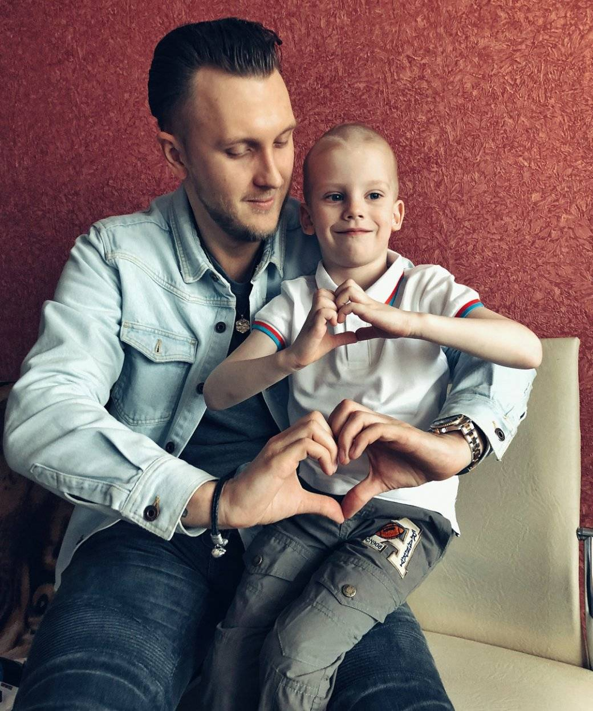
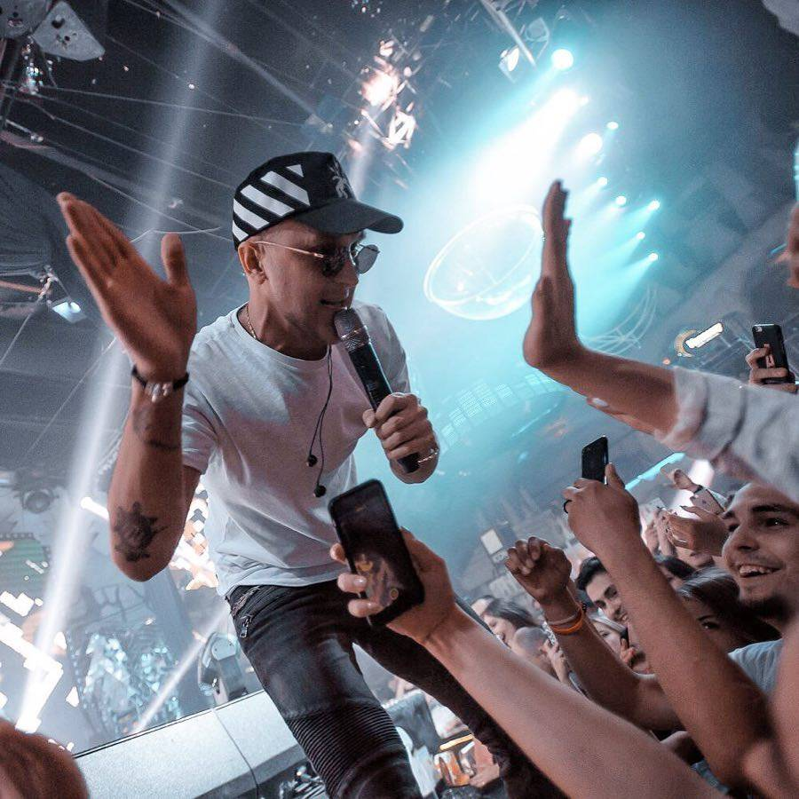
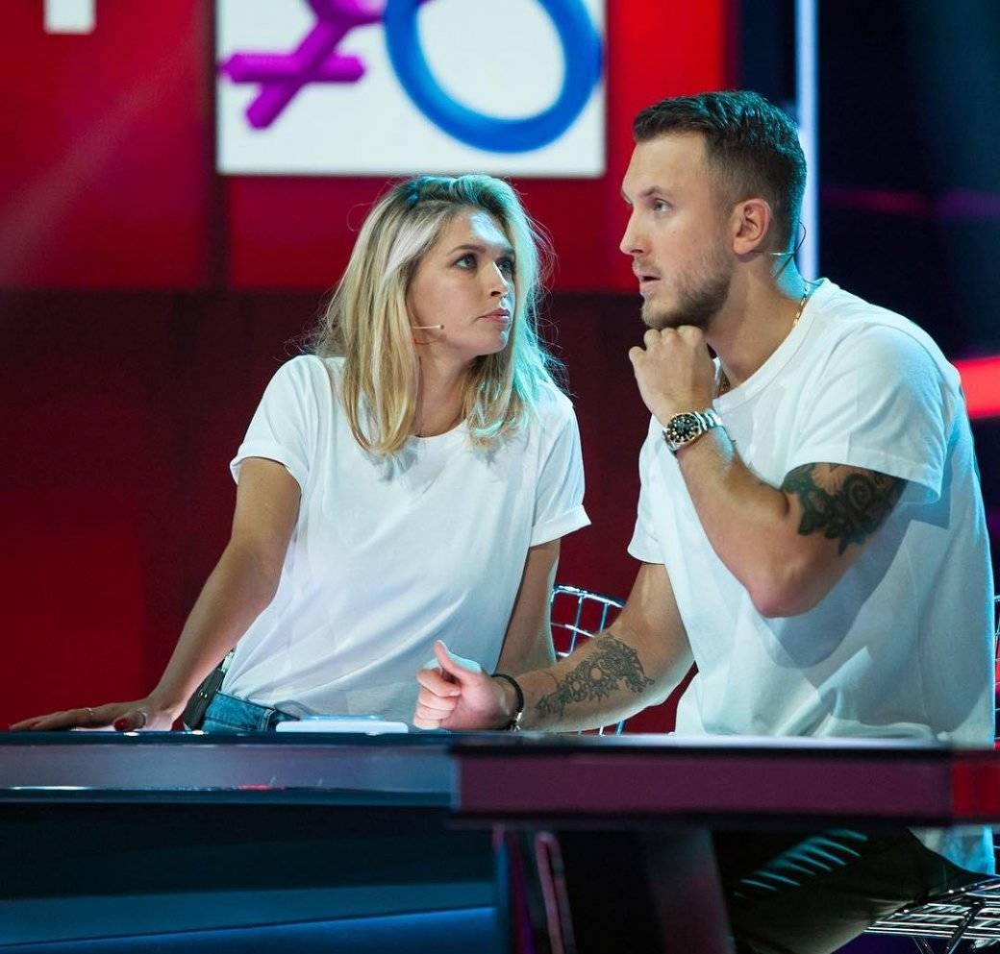

На прошлой неделе российский певец Александр Тарасов (более известный как T-Killah) и капитан Natus Vincere по CS:GO Даниил «Zeus» Тесленко провели совместный стрим, а за несколько дней до этого T-Killah выложил фотографию в худи NAVI. Мы связались с певцом и поинтересовались, почему он вдруг начал увлекаться видеоиграми и следить за киберспортивными командами.
— Откуда пошла увлеченность играми?
— C играми я соприкоснулся впервые очень давно как на PC, так и на консолях. В какой то момент жизни времени перестало хватать на что-то сюжетное и, тем более, на всякие браузерки (привет Бойцовский Клуб) и ММОРПГ. Совсем недавно заново открыл для себя мир игр. Играю исключительно в свое удовольствие, очень разгружает мозг от всех дел. Чаще всего это что-то соревновательное, так лучше переключаешься — в основном либо Counter-Strike, либо Fortnite. Dota 2 попробовал на днях — понимаю, почему она многим нравится, но сам погружаться основательно пока не готов.
Больше всего неравнодушен, конечно, к Counter-Strike, так как связь с этой игрой уходит еще в школьные годы. Помню, как в то время, чтобы поиграть, нужно было чуть ли не подраться на входе в компьютерный зал.
— Твое первое знакомство с киберспортом. Насколько мы правильно поняли на стриме, то это произошло после разговора с Федей Смоловым?
— Не совсем так. О киберспорте я много слышал от друзей и коллег. После разговора с Федей произошло знакомство именно с командой NAVI, тогда же он мне рассказал про Virtus.pro и другие организации.
Я вообще люблю узнавать что-то новое, а так как жизнь связана с индустрией развлечений, то игнорировать эту историю было просто невозможно. Тем более она так хорошо легла на душу. Болеть за NAVI я стал уже после того, как Zeus прокоментил мою фотку в «инсте». Я ознакомился с его страницей и подумал — вот я и определился за кого буду болеть.
— Какими киберспортивными дисциплинами и командами больше всего интересуешься?
— В основном это CS:GO. И нравится наблюдать за топовыми западными стримерами по Fortnite. Очень нравится как развивается «Ниндзя» — его стримы и нарезки в «инсте» топ, круто умеет себя подать.
— Знаком ли лично с кем-то из профессиональных геймеров, кроме «Зевса»?
— Все впереди. Я с каждым днем все больше углубляюсь в геймерскую движуху и всегда рад поддержать, познакомиться и пообщаться с талантами.
— Как получилось организовать коллаборацию с «Зевсом», кто выступил инициатором? Расскажи немного про фотографию в худи NA`VI.
— Мне очень понравился мерч NAVI. Мой друг Паша (Goose Gaming) обратил на это внимание и подарил мне на новогодние праздники их худи. Ношу я всегда то, что мне нравится, то, что я считаю клевым. Худи NAVI действительно стильное и клевое.
Выложил фотку без задней мысли, на что парни из NAVI отреагировали незамедлительно. Пообщались с «Зевсом» и решили, что прикольно было бы сделать совместный стрим. Как раз я планировал запуститься.
— Удавалось ли побывать на каких-то крупных чемпионатах?
— Прежде из мероприятий, так или иначе связанных с геймингом, я был только на «Стримфесте». Помню уже тогда меня впечатлил масштаб и уровень вовлеченности коммьюнити. О крупных чемпионатах уже размышляю. Но, учитывая плотный график, одна половина меня говорит зачем куда-то ехать, ведь можно посмотреть все в онлайне, а другая — интересно, как устроен этот мир, интересно посмотреть все вживую, по-настоящему прочувствовать атмосферу. Может быть, удастся совместить полезное с приятным и снять один из влогов там.
— Твое отношение к текущему состоянию киберспорта в мире?
Пусть молодые ребята зарабатывают деньги и развиваются в этой сфере.
Но про спорт тоже нельзя забывать, чтобы не превратиться в овоща за компом. Нужно уметь совмещать.
А если взять умирающие виды спорта, то скорее здесь проблема промоутеров и спортивных организаций, которые не знают как подогреть интерес к своим турнирам.
— В интервью sports.ru ты рассказал про инвестиции в проекты Neurolyti•x и neurogame.ai? Ты успел получить от них какой-то выхлоп?
— Это венчурная история. Оба проекта находятся в стадии развития, так что о выхлопе с финансовой точки зрения говорить рано. Но мне нравится, куда все движется. Думаю, вы и сами в этом году будете много слышать об этих проектах, особенно о Нейрогейме.
— Не возникало желания создать собственную команду молодых игроков, проспонсировать их?
— Скажу так, я рассматриваю все предложения, связанные с IT и киберспортом. Команда — это интересная история, но пока что достаточно сложная с точки зрения бизнеса. Кое-что внутри правда уже обсуждаем.
— Чисто теоретически, смог бы записать сингл или неофициальный гимн для какого-нибудь киберспортивного клуба, либо выйти на концерт в худи NAVI?
— Выйти на концерт в худи не проблема, я много раз выступал в хоккейной майке своего друга Овечкина или в майках футбольных клубов. Если мне нравится сама вещь, то почему нет. Насчет песни уже кое-что обсуждаем с некоторыми из функционеров индустрии.
— Ты уже несколько раз появлялся на стримах у Павла Гусева из Goose Gaming. Вы играли в Realm Royale. Он твой хороший друг и партнер?
— С Пашей мы дружим более 20 лет, с раннего детства. Goose Gaming — это агентство полного цикла в сфере гейминга и киберспорта (важно разделить эти термины). Ребята помогают брендам наладить нативный контакт с киберспортивной аудиторией, а также содействуют талантам в развитии собственных платформ и их монетизации. Много с кем из Twitch-стримеров уже сотрудничают на эксклюзиве. Например, все мои игровые истории — это эксклюзив Goose Gaming.
— Как возникло желание стримить самому и зачем тебе все это?
— Это абсолютно новый для меня формат общения и взаимодействия. Тут все по-другому и мне это дико нравится — это в сто раз лучше простых прямых эфиров в инстаграме. Само желание возникло еще год назад, но только в конце декабря я наконец-то плотно этим занялся. Отклик получил достаточно позитивный, что мотивирует продолжать. Буду стараться делать разнообразный контент и повышать планку для нашего региона. Какой-то конкретной цели нет — это само по себе своеобразный творческий вызов, посмотрим что из этого получится. Пока что воспринимаю как хобби, чтобы было в кайф и мне, и зрителю.
— Первый большой стрим собрал почти 10 тысяч зрителей. Под конец чувствовалось, что ты немного подустал, а первое время дико волновался. Расскажи про ощущения, это можно сравнить с концертами?
— Можно, я испытывал небольшие переживания как будто выходил на сцену, не знал, сколько будет людей, и как воспримут, так как очень хотелось сделать все красиво для зрителя. В конце устал с непривычки, все-таки почти 4 часа шел стрим.
— Twitch в последнее время не радует. В СНГ многие обвиняют платформу в предвзятости и странных блокировках. За последние полгода забанили очень много известных стримеров за буквально одно матерное слово. Твое мнение на всю эту ситуацию?
— Я против любых блокировок. Интернет все полюбили за свободу самовыражения. Что касается блокировок за маты. Русский язык прекрасен обилием матерных выражений, так что спокойных и правильных речей от меня не ждите. Если меня заблокируют, то париться не собираюсь. Продолжу на YouTube или где-то еще.
— Кто из шоу-бизнеса интересуется киберспортом?
— Я знаю, что многие играют в FIFA. С Киевстонером мы обсуждали киберспорт и стримы. Но в основном все дремучие, они до сих пор думают, что за компом сидят неудачники. Шоубиз… (смеется).
— Касательно благотворительности. Сколько всего получилось собрать денег? И как часто будешь делать подобные трансляции?
— Мы собрали около 73 тысяч рублей. Я немного добавил и перевел в фонд Детские сердца, стараюсь их иногда поддерживать. Недавно узнал про Stream Family (известные стримеры собирают средства на благотворительность) — ребята большие молодцы. Я в целом открыт для любых коллабораций, тем более когда все еще и с благими намерениями. А пока попробую закрепить за собой право именоваться «стримером».